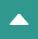
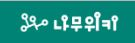
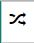
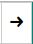

최근 변경
최근 토론
특수 기능
라이브


나무위키
: 대문
☆ 3700
역링크
토론
편집
역사
ACL
분류 :
나무위키
여러분이 가꾸어 나가는
지식의 나무
나무위키
에 오신 것을 환영합니다!
나무위키는 누구나 기여할 수 있는 위키입니다.
검증되지 않았거나 편향된 내용이 있을 수 있습니다.
나무위키에 처음 오셨나요?
먼저
규정
과
도움말
,
자주 하는 실수
를 확인해 보세요.
나무위키 게시판
공지
·
그루터기
·
문의
·
신고
·
차단 소명
·
다중 계정 검사
·
토론 문의
·
개발 문의
권리 침해 문의
문의 방법이
권리 침해 도움말
에 설명되어 있습니다.
운영진 지원
나무위키에서
운영진
을 상시 모집합니다.
이곳
에서 지원하실 수 있습니다.